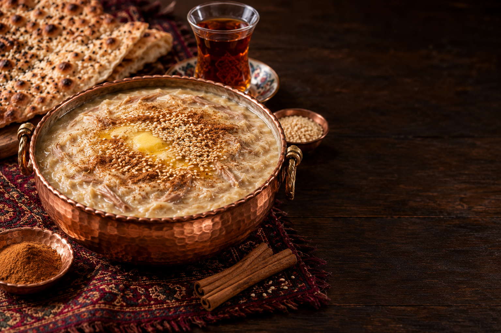

گرم و دلچسب
به رسم تبریز✦
به رسم تبریز✦
قصهای به عطر دارچین
بعضی طعمها،
آدم را به خانه میبرند.
برای ما، صبحانه فقط اولین وعده روز نیست؛ فرصتی است برای مکث کردن، برای دور یک سفره نشستن و برای چشیدن طعمی که آشناست.
در حلیم تبریز، این حس را با یک کاسه حلیم گرم و عطر خوش دارچین به سفره میآوریم. ساده، صمیمی و به رسم مهماننوازی ایرانی.
با مهر، حلیم تبریز ✦